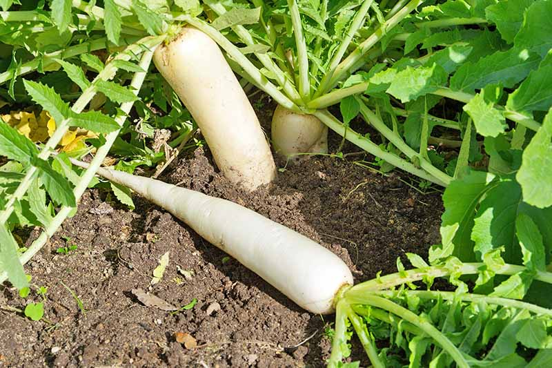
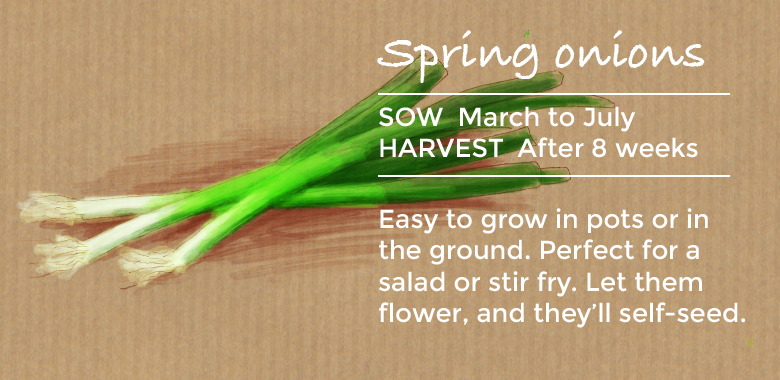
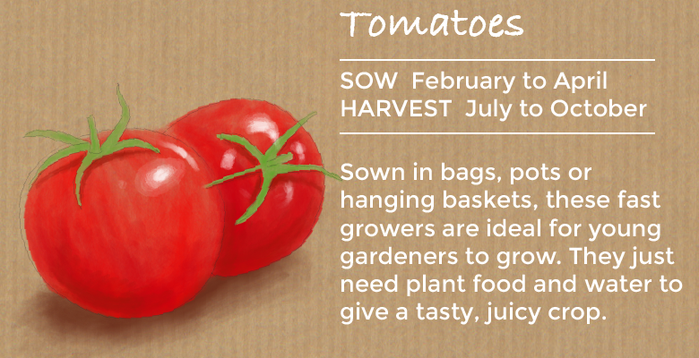
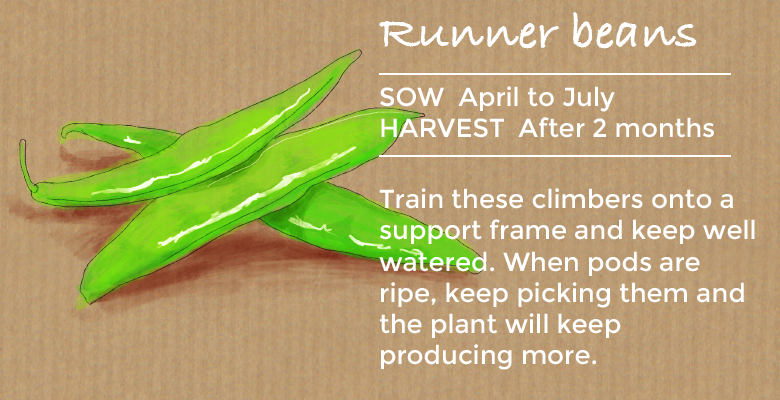

RADISHES
Spice up your salads with crunchy, peppery radishes. They're easy to grow in containers, or sow them directly into the ground throughout the summer for a succession of crunchy, colourful crops.'French Breakfast 3' is a popular old variety that has stood the test of time, while 'Rainbow Mixed' will give you a colourful visual treat for your plate as well as masses of flavour!
SPRING ONIONS
Give your salads a tangy crunch with some quick-growing spring onions. Companion planting with mint will help to deter onion fly. Try 'White Lisbon' for a crop that'll overwinter, or 'Performer' for a milder taste.
TOMATOES
Tomato plants are so quick that you can almost watch them grow, so they are the ideal easy vegetable for kids to cultivate. Choose a bush variety like 'Romello ' that can be planted in hanging baskets and window boxes. Bush varieties don't require training or side-shooting, so you only need to feed and water them before the fruit starts to pour from the plant!
RUNNER BEANS
Almost as simple as broad beans and you can sow them in the same way. Runner Beans are climbers so give them plenty of space and train them onto wires or a plant support frame. Keep them well watered and they will reward you with a constant supply in summer. Regular picking is essential - but that won't be a problem when they taste so good! If you are short on space, why not try dwarf runner bean 'Hestia'.
Who doesn’t love fragrant and fresh coriander on a steaming bowl of gravy or on a tropical salad? These tiny leaves are bound to add a beautiful aroma every dish they are added to. And it’s extremely easy to grow them on your own. Take a handful of coriander seeds and press them slightly to break them into two. Soak the broken seeds in water overnight. Mix sand, red soil, cocopeat, neem cake and compost in equal quantities to make the potting mix. Drain this potting mix well and scrape lines through it to sow the seeds. Spread the seeds evenly along the scraped lines. Cover the seeds lightly with soil and dry leaves. Sprinkle with a little water. After the seeds have sprouted, spray with diluted buttermilk or Panchagavya once every 15 days. Do not overwater the plants. Harvest the Coriander once it’s ready.